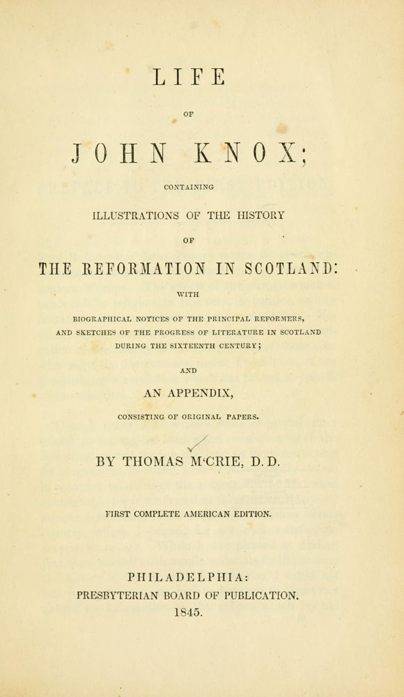
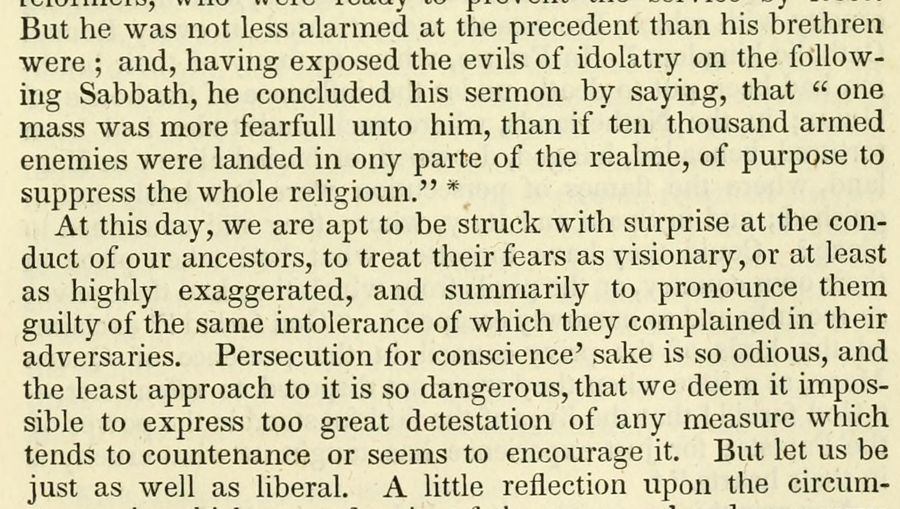

“One mass was more fearfull unto him, than if ten thousand armed enemies were landed” (1845 ed., p. 221)
English: Philadelphia 1845, p. 221, scan n230. M’Crie quotes Knox from Knox’s own Historie (his footnote; the page numbers are blurred in the OCR). Highlighted: the words Lecky quotes.

… Knox used his influence in private conversation to allay the fervour of the more zealous reformers, who were ready to prevent the service by force. But he was not less alarmed at the precedent than his brethren were; and, having exposed the evils of idolatry on the following Sabbath, he concluded his sermon by saying, that “one mass was more fearfull unto him, than if ten thousand armed enemies were landed in ony parte of the realme, of purpose to suppress the whole religioun.”
At this day, we are apt to be struck with surprise at the conduct of our ancestors, to treat their fears as visionary, or at least as highly exaggerated, and summarily to pronounce them guilty of the same intolerance of which they complained in their adversaries. Persecution for conscience’ sake is so odious, and the least approach to it is so dangerous, that we deem it impossible to express too great detestation of any measure which tends to countenance or seems to encourage it. But let us be just as well as liberal. A little reflection upon the circumstances in which our reforming fathers were placed may serve to abate our astonishment, and to qualify our censures. They were actuated by a strong abhorrence of Popish idolatry …

| Knox, as quoted by M’Crie | Lecky (vol. II, ch. IV, text at note 50) |
|---|---|
| he concluded his sermon by saying, that “one mass was more fearfull unto him, than if | ‘One mass,’ exclaimed Knox, ‘is more fearful to me than if |
| ten thousand armed enemies were landed in ony parte of the realme, | 10,000 armed enemies were landed in any part of the realm.’ |
| of purpose to suppress the whole religioun.” | (omitted) |
Lecky’s sentence before it (“That the Queen of Scotland should be permitted to hear mass in her own private chapel, was publicly denounced as an intolerable evil”) matches M’Crie’s account. His note 59 cites the same page, “p. 246”, for Knox’s teaching that idolaters may be put to death; in this edition M’Crie’s defence of the reformers’ intolerance follows directly on the sentence above. Knox’s own words on that subject are on the Appellation page.
Further down the rabbit hole
Sources that Lecky cites in the notes next to the ones that cite this page.
- Buckle, History of Civilization in EnglandWeather and credulity, and the Scottish clergy’s Devil who had been studying for five thousand years
- Knox, The AppellationWhy the English should have put Queen Mary to death
- Neal, The History of the PuritansA boy king signs a death warrant in tears, and the Presbyterians’ heresy law of 1648
- Macaulay, History of England and EssaysMacaulay on Puritans, bear-baiting and the servile Church
- Henry, The Life and Times of John Calvin, vol. II“Placet mihi Luthero”: Luther signs for the sword
- Palmer, A Treatise on the Church of Christ“Whosoever is separated from the Catholic Church … will not have life”


Backlinks
Every place in Rationalism in Europe that links to this page (generated automatically when the site is built).